Sparking
-
The Society's Saumur Rosé Brut NV
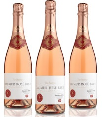A refreshingly fruity Loire rosé that is gentle on the palate with a refined mousse. Perfect on its own or with a starter.£10.95 bottle
Cava Conde de Haro Brut 2014
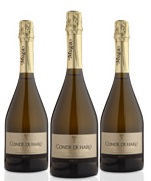
Seriously good Cava from Muga in Rioja, fermented in bottle and aged for two years, just like Champagne, and it has similar depth and complexity.
£13.50 bottle
White
-
Domaine Rollin, Bourgogne Aligoté 2015
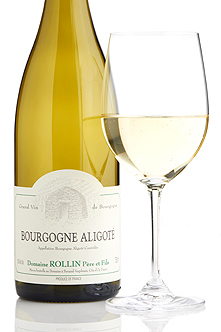A ripe example of the aligoté grape, and yet still a taut, linear white with a pleasing freshness. A delicious combination, highly recommended with mackerel.£11.50 bottle -
Steinig Grüner Veltliner
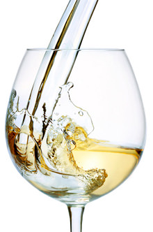A light, crisp and easy-drinking white wine, which is bright and lifted and showcases all the freshness and spiced peach which are the classic notes of Austria's most iconic grape variety.£7.50 bottle -
Navajas Blanco Crianza, Rioja 2015
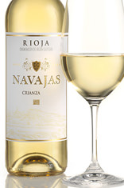Broadly flavoured, round and smooth white Rioja, with intense toasty vanilla flavours from oak ageing.£8.50 bottle
Rose
-
Three Choirs Rosé 2016
Three Choirs Rosé 2016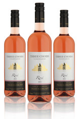In the excellent, ripe and approachable 2016 vintage, this delightful English pink is bursting with cherry and raspberry aromas.£8.25 bottle -
Rosé d'Anjou, Famille Bougrier 2016
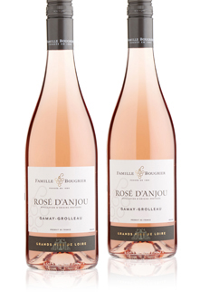Based on the grolleau grape, which is expertly handled to make a pretty, delicately coloured and flavoured rosé that is off-dry yet refreshing, with or without food.£7.25 bottle -
Tavel Cuvée Prima Donna Rosé, Domaine Maby 2016
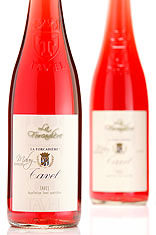An outstanding example of Tavel, the Rhône appellation that produces only rosé wine. Of a deep pink hue, this is round and richly flavoured, brimming with fruit and touches of spicy complexity.£10.50 bottle
Orange
TODO
TODO
£??.?? bottle
Red
-
Château de Lacarelle, Beaujolais-Villages 2017
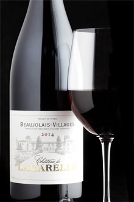This beautiful château can trace its history back to 1750. Ripe, juicy and fresh, this is a lovely example of the open, inviting Beaujolais style and has uncomplicated charm.£7.75 bottle -
Adega de Redondo Real Lavrador, Alentejano 2016
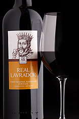A fruity blend of local grape varieties from the warm south of Portugal. Enjoyable simplicity itself, this is a delicious and adaptable red to complement everyday fare.£5.95 bottle -
Terra Rossa, Vina Istria 2016
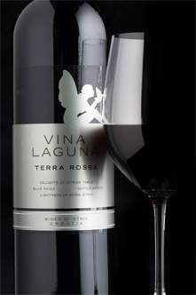Gentle, sweetly fruity red from Istria, the beautiful peninsula in north Croatia, where great value can be found. It is made from a blend of merlot, local borgonja (aka blaufränkisch) and fresh aromatic teran.£7.95 bottle -
Hans Igler Classic Blaufränkisch 2015
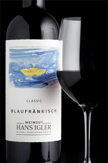This is a benchmark example of Austrian blaufränkisch, stylistically somewhere between pinot noir and cool-climate syrah, with pepper, blackcurrant and sweet spice. Joyously ripe and welcoming, with fresh acidity.£10.50 bottle -
Syrah du Maroc 'Tandem' Alain Graillot et Thalvin 2015
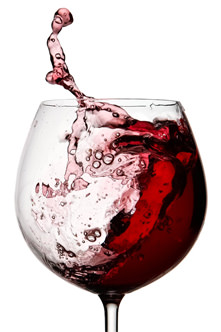Alain Graillot is a top grower in the Rhône's Crozes-Hermitage region and has teamed up with an excellent estate in Morocco to make this fragrant, gently spiced and full-flavoured syrah. Dark and ripe with good length, this would be excellent with lamb tagine.£12.95 bottle -
TODO Rhone
Rhone.£??.?? bottle -
Todo CdP
TODO.£??.?? bottle